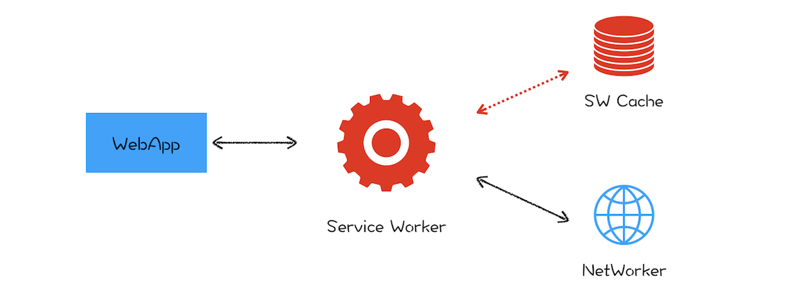

# Service Workers 学习
# 前言
本人平时学习及收集内容，欢迎参入一起讨论。
# 内容
# 一、什么是 Service Workers
在 2014 年的时候，标准委员会就提出了 Service Worker 的概念，它的主要思想是在页面和网络之间增加一个拦截器，用来缓存和拦截请求。整体结构如下图所示：

在没有安装 Service Worker 之前，WebApp 都是直接通过网络模块来请求资源的。安装了 Service Worker 模块之后，WebApp 请求资源时，会先通过 Service Worker，让它判断是返回 Service Worker 缓存的资源还是重新去网络请求资源。一切的控制权都交由 Service Worker 来处理。
兼容性
# 二、Service Worker 的优势
# 2.1 支持离线访问
传统的 web 页面，在每次访问的时候，都会去请求服务器的资源。在使用 Service Worker 之后，第一次访问的时候，可以将我们的静态资源缓存下来，下次访问的时候可以通过 Service Worker 返回缓存，就可以支持离线访问了。
# 2.2 加载速度快
页面资源缓存之后，不需要依赖网络加载服务器资源。无论用户是否具有良好的的网络状态，甚至在离线的情况下，都可以瞬间加载我们的 web 页面。
# 2.3 离线状态下的可用性
在不追求返回结果的数据请求中，可以使用 Service Worker 进行代理。当客户端从离线转为在线的时候，就算已经关闭了页面。Service Worker 也能够帮助我们继续发送代理的请求。无论，用户是在线、离线还是网络不稳定的时候，借助 Service Worker 都能够提供一个相对完整的用户体验。
# 三、Service Worker 的设计思路
# 3.1 架构
JavaScript 和页面渲染流水线的任务都是在页面主线程上执行的，如果一段 JavaScript 执行时间过久，那么就会阻塞主线程，使得渲染一帧的时间变长，从而让用户产生卡顿的感觉，这对用户来说体验是非常不好的。
为了避免 JavaScript 过多占用页面主线程时长的情况，浏览器实现了 Web Worker 的功能。Web Worker 的目的是让 JavaScript 能够运行在页面主线程之外，不过由于 Web Worker 中是没有当前页面的 DOM 环境的，所以在 Web Worker 中只能执行一些和 DOM 无关的 JavaScript 脚本，并通过 postMessage 方法将执行的结果返回给主线程。所以说在 Chrome 中， Web Worker 其实就是在渲染进程中开启的一个新线程，它的生命周期是和页面关联的。
“让其运行在主线程之外”就是 Service Worker 来自 Web Worker 的一个核心思想。不过 Web Worker 是临时的，每次 JavaScript 脚本执行完成之后都会退出，执行结果也不能保存下来，如果下次还有同样的操作，就还得重新来一遍。所以 Service Worker 需要在 Web Worker 的基础之上加上储存功能。
另外，由于 Service Worker 还需要会为多个页面提供服务，所以还不能把 Service Worker 和单个页面绑定起来。在目前的 Chrome 架构中，Service Worker 是运行在浏览器进程中的，因为浏览器进程生命周期是最长的，所以在浏览器的生命周期内，能够为所有的页面提供服务。
# 3.2 消息推送
消息推送也是基于 Service Worker 来实现的。因为消息推送时，浏览器页面也许并没有启动，这时就需要 Service Worker 来接收服务器推送的消息，并将消息通过一定方式展示给用户。关于消息推送的细节这里我们就不详述了，如果你感兴趣的话可以自行搜索相关资料去学习。
# 3.3 安全
关于安全，其中最为核心的一条就是 HTTP。我们知道，HTTP 采用的是明文传输信息，存在被窃听、被篡改和被劫持的风险，在项目中使用 HTTP 来传输数据无疑是“裸奔”。所以在设计之初，就考虑对 Service Worker 采用 HTTPS 协议，因为采用 HTTPS 的通信数据都是经过加密的，即便拦截了数据，也无法破解数据内容，而且 HTTPS 还有校验机制，通信双方很容易知道数据是否被篡改。关于 HTTPS 协议，我们会在最后的安全模块详细介绍。
所以要使站点支持 Service Worker，首先必要的一步就是要将站点升级到 HTTPS。
# 四、Service Worker 使用
# 参考资料
# 联系作者
平凡世界，贵在坚持。